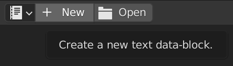
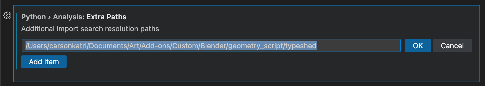
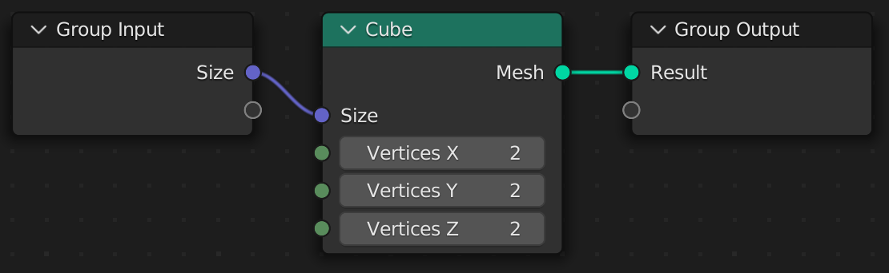
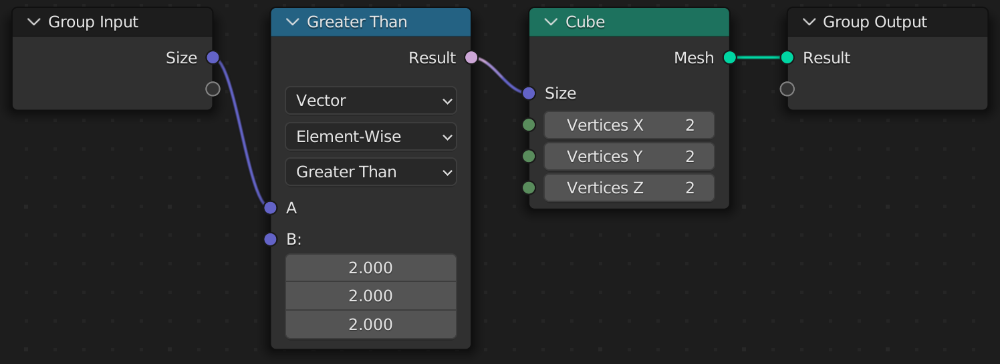
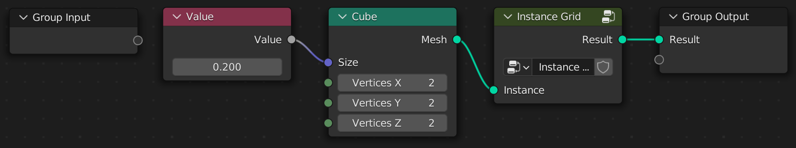

Introduction
Geometry Script is a scripting API for Blender's Geometry Nodes. It makes complicated node trees more managable and easy to share.
- Full coverage of nodes available in your Blender version
- Clean, easy to use Python API
- External IDE integration for better completions and hot reload
Here's a simple example of what's possible with a short script:
Geometry Script
from geometry_script import *
@tree("Repeat Grid")
def repeat_grid(geometry: Geometry, width: Int, height: Int):
g = grid(
size_x=width, size_y=height,
vertices_x=width, vertices_y=height
).mesh_to_points()
return g.instance_on_points(instance=geometry)
Generated Node Tree

Installation
The add-on is available on GitHub and Blender Market. Choose where you want to get it from and follow the steps below:
From GitHub
- Download the source code
- Open Blender > Preferences > Add-ons
- Choose Install... and select the downloaded ZIP file
From Blender Market
- After purchasing the add-on, download the ZIP file
- Open Blender > Preferences > Add-ons
- Choose Install... and select the downloaded ZIP file
Internal Editing Basics
The fastest way to get up and running is with Blender's built-in Text Editor. You can edit and execute your scripts right inside of Blender:
- Open a Text Editor space.

- Create a new text data-block with the New button.

- Start writing a Geometry Script. As an example, you can paste in the script below. More detailed instructions on writing scripts are in later chapters.
from geometry_script import *
@tree("Repeat Grid")
def repeat_grid(geometry: Geometry, width: Int, height: Int):
g = grid(
size_x=width, size_y=height,
vertices_x=width, vertices_y=height
).mesh_to_points()
return g.instance_on_points(instance=geometry)
- Click the run button to execute the script. This will create a Geometry Nodes tree named Repeat Grid.

- Create a Geometry Nodes modifier on any object in your scene and select the Repeat Grid tree.

External Editing
Blender's Text Editor leaves a lot to be desired. Writing scripts without code completion can be tough. Using an external code editor is one way to improve the editing experience.
This guide will show how to setup Visual Studio Code to edit Geometry Scripts. However, the same concepts apply to other IDEs.
This guide assumes you have already installed Visual Studio Code and setup the Python extension. If not, please setup those tools before continuing.
Code Completion
When the Geometry Script add-on starts, it generates a Python typeshed file that can be used to provide code completion. All we have to do is add the right path to the Python extension's configuration:
- Open Blender preferences and expand the Geometry Script preferences
- Copy the Typeshed Path

- In VS Code, open the Settings UI (
Shift+CTRL+PorShift+CMD+P>Preferences > Open Settings (UI)) - Find the setting
Python > Analysis: Extra Paths - Click Add Item, then paste in the path copied from Blender and click OK

- Create a new Python file, such as
Repeat Grid.pyand start writing a script. As you type, you should get helpful suggestions for every available node.

Linking with Blender
Writing a script is great, but we want to see it run in Blender. Thankfully, Blender's Text Editor lets us link with an external file, and a simple tool from Geometry Script can make the process more seamless:
- Open a Text Editor space.
- Click the open button in the top of the editor, and navigate to your Python file.
- Click the gear icon or press N, and uncheck Make Internal. This will ensure that changes made outside of Blender can be easily brought in.
- Click Open Text.

- At the top right of the Text Editor, open the Geometry Script menu and enable Auto Resolve. Enabling this feature will make the text data-block in Blender update every time you save the file outside of Blender.

- To enable hot reload, open the Text menu and enable Live Edit. This will re-run your Geometry Script whenever it changes, updating the node tree live.

And that's it! You're setup to start writing scripts. In the next section we'll take a look at the API, and all of the things you can do with it.
Basics
Creating Geometry Scripts can be as easy or complex as you want for your project. Throughout this guide, scripts will be displayed alongside the generated nodes to provide context on how a script relates to the underlying nodes.
Setting up an editor for external editing is recommended when writing scripts, but internal editing inside Blender will suffice for the simple examples shown here.
Modules
The first step when writing is script is importing the geometry_script module. There a are a few ways of doing this:
Import All Names (Recommended)
This will import every type and function available into your script. It can make it easy to discover what's available with code completion, and makes the scripts more terse.
from geometry_script import *
cube(...) # Available globally
my_geo: Geometry # All types available as well
Import Specific Names
This will import only the specified names from the module:
from geometry_script import cube, Geometry
cube(...) # Available from import
my_geo: Geometry
Namespaced Import
This will import every type and function, and place them behind the namespace. You can use the module name, or provide your own.
import geometry_script
geometry_script.cube(...) # Prefix with the namespace
my_geo: geometry_script.Geometry
import geometry_script as gs
gs.cube(...) # Prefix with the custom name
my_geo: gs.Geometry
Now that you have Geometry Script imported in some way, let's create a tree.
Tree Functions
Node trees are created by decorating a function with @tree. Let's try creating a simple tree function.
The code samples for the rest of the book assume you are importing all names with
from geometry_script import *. However, if you are using a namespaced import, simply prefix the functions and types withgeometry_scriptor your custom name.
@tree
def cube_tree():
...
By default, the name of your function will be used as the name of the generated node tree. However, you can specify a custom name by passing a string to @tree:
@tree("Cube Tree")
def cube_tree():
...
Group Output
Every node tree is required to return Geometry as the first output. Let's try returning a simple cube.
@tree("Cube Tree")
def cube_tree():
return cube()
Here we call the cube(...) function, which creates a Cube node and connects it to the Group Output.

You can also return multiple values. However, Geometry must always be returned first for a tree to be valid.
@tree("Cube Tree")
def cube_tree():
return cube(), 5

Group Input
All arguments in a tree function must be annotated with a valid socket type. These types are provided by Geometry Script, and are not equivalent to Python's built-in types. Let's add a size argument to our Cube Tree.
@tree("Cube Tree")
def cube_tree(size: Vector):
return cube(size=size)
This creates a Size socket on the Group Input node and connects it to our cube.

The option is available on the Geometry Nodes modifier.

The available socket types match those in the UI. Here are some common ones:
GeometryFloatIntVector
You cannot use Python's built-in types in place of these socket types.
In the next chapter, we'll take a closer look at how socket types work, and what you can and cannot do with them.
Default Values
You can specify a default for any argument, and it will be set on the modifier when added:
@tree("Cube Tree")
def cube_tree(size: Vector = (1, 1, 1)):
return cube(size=size)

Sockets
Because scripts are converted to Geometry Node trees, you typically cannot use default Python types as arguments. In some cases, they will be automatically converted for you, but in general you will be dealing with socket types.
What is a socket?
A socket is any input or output on a node. Take the Cube node for example:

This node has 4 input sockets, and 1 output socket.
- Input Sockets
- Size:
Vector - Vertices X:
Int - Vertices Y:
Int - Vertices Z:
Int
- Size:
- Output Sockets
- Mesh:
Geometry
- Mesh:
A socket does not represent a value itself. For example, the Size socket does not necessarily represent the value (1, 1, 1). Instead, it can be connected to another node as an input, giving it a dynamic value.
When we write scripts, we typically deal with socket types, not concrete values like (1, 1, 1). Take this script for example:
@tree("Cube Tree")
def cube_tree(size: Vector):
return cube(size=size)
The size argument creates a input socket with the type Vector. This is then connected to the size socket of the Cube node.
Our script does not run every time the node tree is evaluated. It only runs once to create the node tree. Therefore, we have no way of knowing what value size has when the script runs, because it is dynamic.
What sockets can do
Sockets are great for passing values between nodes. A socket type like Geometry does not represent concrete vertices, edges, and faces. Instead, it represents the input or output socket of a node. This lets us use it to create connections between different nodes, by passing the output of one node to the input of another.
What sockets cannot do
Sockets cannot be read for their concrete value. A Float socket type does not equal 5 or 10 or 3.14 to our script. It only represents the socket of a node. If you try to print(...) a socket, you will receive a generic reference type with no underlying value.
Why use sockets?
You might be wondering, "if you can't access the value of a socket, what can you do with it?"
Geometry Script provides many helpful additions that make working with sockets about as easy as working with a concrete value.
Socket Math
Socket types can be used to perform math operations. The proper Math node will be created automatically for you, so you can focus on writing a script and not thinking about sockets. If you use Float or Int it will create a Math node, and if you use a Vector it will create a Vector Math node.
@tree("Cube Tree")
def cube_tree(size: Vector):
doubled = size * (2, 2, 2) # Multiply each component by 2
return cube(size=doubled)

Several common math operations are available, such as:
- Add (
socket + 2) - Subtract (
socket - 2) - Multiply (
socket * 2) - Divide (
socket / 2) - Modulo (
socket % 2)
Socket Comparison
Socket types can be compared with Python comparison operators. A Compare node will be created with the correct inputs and options specified.
@tree("Cube Tree")
def cube_tree(size: Vector):
show_cube = size > (2, 2, 2) # Check if each component is greater than 2
return cube(size=show_cube)

Several common comparison operators are supported, such as:
- Equal To (
socket == 2) - Not Equal To (
socket != 2) - Less Than (
socket < 2) - Less Than Or Equal To (
socket <= 2) - Greater Than (
socket > 2) - Greater Than Or Equal To (
socket >= 2)
Vector Component Properties
While the Vector type does not equate to three concrete components, such as (1, 2, 3), you can still access the x, y, and z components as sockets. A Separate XYZ node will be created with the correct inputs and outputs specified.
@tree("Cube Tree")
def cube_tree(size: Vector):
height = size.z # Access the Z component
# Multiply the height by 2 but leave the other components unchanged.
return cube(size=combine_xyz(x=size.x, y=size.y, z=height * 2))
For each component access, a Separate XYZ node is created.

Chained Calls
Any node function can be called on a socket type. This will automatically connect the socket to the first input of the node.
@tree("Cube Tree")
def cube_tree(size: Vector):
return cube(size=size).mesh_to_volume()
The output of the Cube node (a Geometry socket type) is connected to the first input of the Mesh to Volume node.

The same script without chaining calls is written more verbosely as:
@tree("Cube Tree")
def cube_tree(size: Vector):
return mesh_to_volume(mesh=cube(size=size))
Spanning Multiple Lines
Often times you want each chained calls to be on a separate line. There are a few ways to do this in Python:
- Newlines around arguments
cube(
size=size
).mesh_to_volume()
- Parentheses
(cube(size=size)
.mesh_to_volume())
- Line continuation
cube(size=size) \
.mesh_to_volume()
Using Nodes
Node functions are automatically generated for the Blender version you are using. This means every node will be available from geometry script.
This means that when future versions of Blender add new nodes, they will all be available in Geometry Script without updating the add-on.
To see all of the node functions available in your Blender version, open the Geometry Script menu in the Text Editor and click Open Documentation.

This will open the automatically generated docs page with a list of every available node and it's inputs and outputs.
How nodes are mapped
All nodes are mapped to functions in the same way, so even without the documentation you can decifer what a node will equate to. Using an IDE with code completion makes this even easier.
The general process is:
- Convert the node name to snake case.
- Add a keyword argument (in snake case) for each property and input.
- If the node has a single output, return the socket type, otherwise return an object with properties for each output name.
Properties and inputs are different types of argument. A property is a value that cannot be connected to a socket. These are typically enums (displayed in the UI as a dropdown), with specific string values expected. Check the documentation for a node to see what the possible values are for a property.
Enum Properties
Many nodes have enum properties. For example, the math node lets you choose which operation to perform. You can pass a string to specify the enum case to use. But a safer way to set these values is with the autogenerated enum types. The enums are namespaced to the name of the node in PascalCase:
# Access it by Node.Enum Name.Case
math(operation=Math.Operation.ADD)
math(operation=Math.Operation.SUBTRACT)
math(operation='MULTIPLY') # Or manually pass a string
Internally, this type is generated as:
import enum
class Math:
class Operation(enum.Enum):
ADD = 'ADD'
SUBTRACT = 'SUBTRACT'
MULTIPLY = 'MULTIPLY'
...
...
The cases will appear in code completion if you setup an external editor.
Duplicate Names
Some nodes use the same input name multiple times. For example, the Math node has three inputs named value. To specify each value, pass a tuple for the input:
math(operation=Math.Operation.WRAP, value=(0.5, 1, 0)) # Pass all 3
math(operation=Math.Operation.WRAP, value=(0.5, 1)) # Only pass 2/3
math(operation=Math.Operation.WRAP, value=0.5) # Only pass 1/3

Examples
Here are two examples to show how a node maps to a function.
Cube
- Name:
Cube->cube - Keyword Arguments
size: Vectorvertices_x: Intvertices_y: Intvertices_z: Int
- Return
Geometry
The node can now be used as a function:
cube() # All arguments are optional
cube(size=(1, 1, 1), vertices_x=3) # Optionally specify keyword arguments
cube_geo: Geometry = cube() # Returns a Geometry socket type
The generated documentation will show the signature, result type, and chain syntax.
Signature
cube(
size: VectorTranslation,
vertices_x: Int,
vertices_y: Int,
vertices_z: Int
)
Result
mesh: Geometry
Chain Syntax
size: VectorTranslation = ...
size.cube(...)
Capture Attribute

- Name
Capture Attribute->capture_attribute - Keyword Arguments
- Properties
data_type: CaptureAttribute.DataTypedomain: CaptureAttribute.Domain
- Inputs
geometry: Geometryvalue: Vector | Float | Color | Bool | Int
- Properties
- Return
{ geometry: Geometry, attribute: Int }
The node can now be used as a function:
result = capture_attribute(data_type=CaptureAttribute.DataType.BOOLEAN, geometry=cube_geo) # Specify a property and an input
result.geometry # Access the geometry
result.attribute # Access the attribute
The generated documentation will show the signature, result type, and chain syntax.
Signature
capture_attribute(
data_type: CaptureAttribute.DataType,
domain: CaptureAttribute.Domain,
geometry: Geometry,
value: Vector | Float | Color | Bool | Int
)
Result
{ geometry: Geometry, attribute: Int }
Chain Syntax
geometry: Geometry = ...
geometry.capture_attribute(...)
Advanced Scripting
Now that we've covered the basics, let's take a look at some more advanced scripting techniques.
Node Groups
A Geometry Script can have more than one tree function. Each tree function is a node group, and tree functions can be used in other tree functions to create Node Group nodes.
@tree("Instance Grid")
def instance_grid(instance: Geometry):
""" Instance the input geometry on a grid """
return grid().mesh_to_points().instance_on_points(instance=instance)
@tree("Cube Grid")
def cube_grid():
""" Create a grid of cubes """
return instance_grid(instance=cube(size=0.2))
The Cube Grid tree uses the Instance Grid node group by calling the instance_grid function:

The Instance Grid node group uses the passed in instance argument to create a grid of instances:

This concept can scale to complex interconnected node trees, while keeping everything neatly organized in separate functions.
Generators
Python has support for generators using the yield keyword.
Geometry Script tree functions can be represented as generators to output multiple values. If every generated value is Geometry, the values are automatically connected to a Join Geometry node and output as a single mesh.
@tree("Primitive Shapes")
def primitive_shapes():
yield cube()
yield uv_sphere()
yield cylinder().mesh

However, if any of the outputs is not Geometry, separate sockets are created for each output.
@tree("Primitive Shapes and Integer")
def primitive_shapes():
yield cube()
yield uv_sphere()
yield cylinder().mesh
yield 5 # Not a geometry socket type

The first output is always displayed when using a Geometry Nodes modifier. Ensure it is a
Geometrysocket type, unless you are using the function as a node group.
Input Groups
Some geometry node trees need a lot of arguments.
@tree("Terrain Generator")
def terrain_generator(
width: Float
height: Float
resolution: Int
scale: Float
w: Float
):
...
There are a couple of problems with this. Firstly, the function signature is getting long. This can make it harder to visually parse the script. And, if we want to use the same arguments in another tree and pass them through to terrain, we need to make sure to keep everything up to date.
This is where input groups come in. An input group is class that contains properties annotated with valid socket types.
To create an input group, declare a new class that derives from InputGroup.
class TerrainInputs(InputGroup):
width: Float
height: Float
resolution: Int
scale: Float
w: Float
Then annotate an argument in your tree function with this class.
@tree("Terrain Generator")
def terrain_generator(
inputs: TerrainInputs
):
...
This will create a node tree with the exact same structure as the original implementation. The inputs can be accessed with dot notation.
size = combine_xyz(x=input.width, y=input.height)
And now passing the inputs through from another function is much simpler.
def point_terrain(
terrain_inputs: TerrainInputs,
radius: Float
):
return terrain_generator(
inputs=terrain_inputs
).mesh_to_points(radius=radius)
Instantiating Input Groups
If you nest calls to tree functions, you can instantiate the InputGroup subclass to pass the correct inputs.
def point_terrain():
return terrain_generator(
inputs=TerrainInputs(
width=5,
height=5,
resolution=10,
scale=1,
w=0
)
).mesh_to_points()
Input Group Prefix
If you use the same InputGroup multiple times, you need to provide a prefix. Otherwise, inputs with duplicate names will be created on your tree.
To do this, use square brackets next to the annotation with a string for the prefix.
def mountain_or_canyon(
mountain_inputs: TerrainInputs["Mountain"], # Prefixed with 'Mountain'
canyon_inputs: TerrainInputs["Canyon"], # Prefixed with 'Canyon'
is_mountain: Bool
):
return terrain_generator(
inputs=switch(switch=is_mountain, true=mountain_inputs, false=canyon_inputs)
)
Attributes
An important concept in Geometry Nodes is attributes. Many trees transfer attributes between geometry, using a combination of Capture Attribute and Transfer Attribute.
Unfortunately, it takes quite a bit of code to use this common pattern.
@tree("Skin")
def skin():
# Create a cube
c = cube()
# Capture the position
cube_position_attribute = c.capture_attribute(
data_type=CaptureAttribute.DataType.FLOAT_VECTOR,
value=position()
)
# Create a sphere
sphere = uv_sphere()
# Transfer the position to the sphere
transferred_position = cube_position_attribute.geometry.transfer_attribute(
data_type=TransferAttribute.DataType.FLOAT_VECTOR,
attribute=cube_position_attribute.attribute
)
# Make the sphere conform to the shape of the cube
return sphere.set_position(position=transferred_position)
Thankfully, a convenient capture(...) method is available on Geometry, which simplifies this function quite a bit.
@tree("Skin")
def skin():
# Create a cube
c = cube()
# Capture the position
cube_position = c.capture(position())
# Create a sphere
sphere = uv_sphere()
# Make the sphere conform to the shape of the cube
return sphere.set_position(position=cube_position())
How it Works
Internally, capture(...) works just like the more manual approach.
- Capture the attribute from the source
In the example above, we capture the position() from the cube.
The data type is automatically inferred from the input. If you want to customize other options, simply pass them as keyword arguments to capture(...).
cube_position = c.capture(position())
cube_position = c.capture(position(), domain=CaptureAttribute.Domain.FACE) # Optionally pass other arguments available on `capture_attribute`.
- Transfer the attribute to the target
capture(...) returns another function that calls transfer_attribute with the correct arguments passed automatically.
Call this returned function (which we store in the variable cube_position) to transfer the attribute.
In this example we also set the transferred cube position back onto the sphere.
sphere.set_position(position=cube_position())
sphere.set_position(position=cube_position(mapping=TransferAttribute.Mapping.NEAREST)) # Optionally pass other arguments available on `transfer_attribute`.
Voxelize
This tutorial walks you through creating a script that turns any mesh into voxels.
This tutorial requires Blender 3.4+ for the Distribute Points In Volume node.
Setting Up
Create a base mesh. I'll be using a Monkey primitive.

Next, create a new script. Setting up an external editor is recommended.
Import Geometry Script, and create a basic tree builder function. We'll add a geometry argument and annotate it with the Geometry type to receive our base mesh (in this case, a monkey).
from geometry_script import *
@tree("Voxelize")
def voxelize(geometry: Geometry):
return geometry
Run the script to create the tree, then add a Geometry Nodes modifier to your mesh and select the Voxelize node group.

Arguments
Add a new argument resolution: Float. Give it a default value of 0.2. This value will be used throughout the script to configure spacing and voxel density.
def voxelize(geometry: Geometry, resolution: Float = 0.2):
...
Mesh to Volume
We want to convert the mesh to a hollow volume, so only the outside of the mesh has voxel instances. This will improve the performance of our script.
Use the mesh_to_volume function on the base mesh to convert it to a volume.
def voxelize(geometry: Geometry, resolution: Float = 0.2):
return geometry.mesh_to_volume( # Hollow mesh volume
interior_band_width=resolution,
fill_volume=False
)

Volume to Points
Next, we need to create points to instance each voxel cube on. Use distribute_points_in_volume with the mode set to DENSITY_GRID to create a uniform distribution of points.
def voxelize(geometry: Geometry, resolution: Float = 0.2):
return geometry.mesh_to_volume(
interior_band_width=resolution,
fill_volume=False
).distribute_points_in_volume( # Uniform grid distribution
mode=DistributePointsInVolume.Mode.DENSITY_GRID,
spacing=resolution
)

Instance Cubes
Finally, use instance_on_points with a cube of size resolution to instance a cube on each point created from our mesh.
def voxelize(geometry: Geometry, resolution: Float = 0.2):
return geometry.mesh_to_volume(
interior_band_width=resolution,
fill_volume=False
).distribute_points_in_volume(
mode=DistributePointsInVolume.Mode.DENSITY_GRID,
spacing=resolution
).instance_on_points( # Cube instancing
instance=cube(size=resolution)
)

You can lower the resolution to get smaller, more detailed voxels, or raise it to get larger voxels.
Final Script
# NOTE: This example requires Blender 3.4+
from geometry_script import *
@tree("Voxelize")
def voxelize(geometry: Geometry, resolution: Float = 0.2):
return geometry.mesh_to_volume(
interior_band_width=resolution,
fill_volume=False
).distribute_points_in_volume(
mode=DistributePointsInVolume.Mode.DENSITY_GRID,
spacing=resolution
).instance_on_points(
instance=cube(size=resolution)
)
Generated Node Tree

City Builder
In this tutorial we'll create a dense grid of buildings, then cut away from them to place roads with curves. We'll also make use of a generator to combine the buildings with the roads.

Setting Up
Create a Bezier Curve object. You can enter edit mode and delete the default curve it creates.
Then create a new script. Setting up an external editor is recommended.
Import Geometry Script, and create a basic tree builder function. We'll add a few arguments to configure the buildings.
from geometry_script import *
@tree("City Builder")
def city_builder(
geometry: Geometry,
seed: Int,
road_width: Float = 0.25,
size_x: Float = 5, size_y: Float = 5, density: Float = 10,
building_size_min: Vector = (0.1, 0.1, 0.2),
building_size_max: Vector = (0.3, 0.3, 1),
):
return geometry
Run the script to create the tree, then add a Geometry Nodes modifier to your curve object and select the City Builder node group.
Buildings
Let's start with the buildings. We'll distribute points on a grid with size_x and size_y.
def city_builder(...):
building_points = grid(size_x=size_x, size_y=size_y).distribute_points_on_faces(density=density, seed=seed).points
return building_points
Next, we'll instance cubes on these points to serve as our buildings. We move the cube object up half its height so the buildings sit flat on the grid, and scale them randomly between the min and max sizes.
def city_builder(...):
...
return building_points.instance_on_points(
instance=cube().transform(translation=(0, 0, 0.5)),
scale=random_value(data_type=RandomValue.DataType.FLOAT_VECTOR, min=building_size_min, max=building_size_max, seed=seed),
)
Roads
Using curve_to_mesh, we can turn the input curve into a flat mesh. We'll use the yield keyword to join the curve mesh and the building mesh automatically. Change the building_points.instance_on_points line to use yield for this to work.
def city_builder(...):
yield geometry.curve_to_mesh(profile_curve=curve_line(
start=combine_xyz(x=road_width * -0.5),
end=combine_xyz(x=road_width * 0.5)
))
...
yield building_points.instance_on_points(...)
But now the buildings are overlapping the road. We need to remove any point that falls within the road curve. We'll use geometry_proximity and delete_geometry to find and remove these invalid points.
def city_builder(...):
...
building_points = ...
road_points = geometry.curve_to_points(mode=CurveToPoints.Mode.EVALUATED).points
building_points = building_points.delete_geometry(
domain=DeleteGeometry.Domain.POINT,
selection=geometry_proximity(target_element=GeometryProximity.TargetElement.POINTS, target=road_points, source_position=position()).distance < road_width
)
...
Drawing Roads
Enter edit mode and select the Draw tool. Simply draw roads onto your city to see the buildings and meshes update.
Final Script
from geometry_script import *
@tree("City Builder")
def city_builder(
geometry: Geometry,
seed: Int,
road_width: Float = 0.25,
size_x: Float = 5, size_y: Float = 5, density: Float = 10,
building_size_min: Vector = (0.1, 0.1, 0.2),
building_size_max: Vector = (0.3, 0.3, 1),
):
# Road mesh
yield geometry.curve_to_mesh(profile_curve=curve_line(
start=combine_xyz(x=road_width * -0.5),
end=combine_xyz(x=road_width * 0.5)
))
# Building points
building_points = grid(size_x=size_x, size_y=size_y).distribute_points_on_faces(density=density, seed=seed).points
road_points = geometry.curve_to_points(mode=CurveToPoints.Mode.EVALUATED).points
# Delete points within the curve
building_points = building_points.delete_geometry(
domain=DeleteGeometry.Domain.POINT,
selection=geometry_proximity(target_element=GeometryProximity.TargetElement.POINTS, target=road_points, source_position=position()).distance < road_width
)
# Building instances
yield building_points.instance_on_points(
instance=cube().transform(translation=(0, 0, 0.5)),
scale=random_value(data_type=RandomValue.DataType.FLOAT_VECTOR, min=building_size_min, max=building_size_max, seed=seed),
)
Generated Node Tree